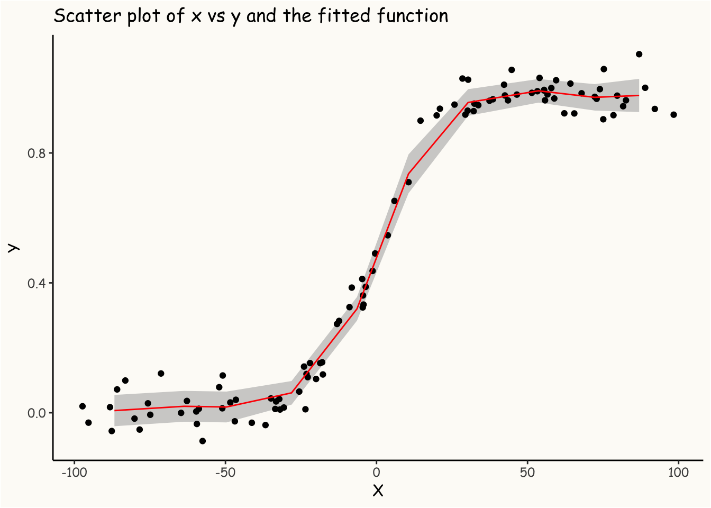
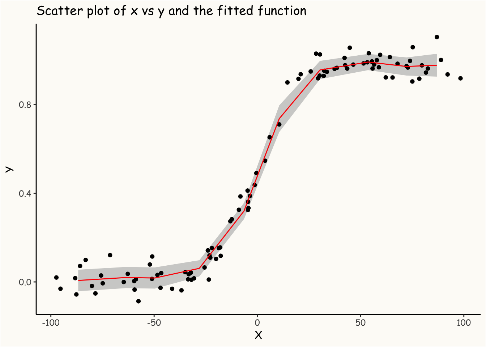

Modeling Non-linear Effects using Random Walk in R-INLA
R
Bayesian Statistics
INLA
Random Walk
A guide to modeling non-linear effects using random walk with the R-INLA package.
Author
Amin Shoarinejad
Published
August 6, 2023
Random walk models can be very useful for modeling non-linear effects in statistical analysis. In this post, we will explore how to use the Integrated Nested Laplace Approximation (INLA) method with a random walk model in R to show how to model non-linear relationships.
Requirements
We’ll need to load the INLA library in R. If you don’t have R-INLA installed, you can follow the instructions here to install it.
Random Walk: A Brief Overview
Imagine a stock price that moves daily. You might think today’s price is the best predictor of tomorrow’s price, with some random fluctuation added. This idea is central to a random walk model. Mathematically, this can be expressed as:
\[P_{t} = P_{t-1} + \epsilon_{t}\] where:
\(P_{t}\) is the price at time \(t\).
\(\epsilon_{t}\) is a random error term at time \(t\), typically assumed to be normally distributed with mean 0.
This model suggests that the change in value from one time point to the next is purely random, hence the name random walk.
Using Random Walk to Model Non-Linearity
While random walks are mostly used in time series analysis (like in the stock price example) but the idea could be easily applied to problems where there is no time dimension. In the following example we will see how we can use random walk to recover a non-linear relationship between two continuous variables.
Suppose x is continuous and uniformly distributed between [-100, 100], represented as:
\[x \sim \text{Uniform}(-100, 100)\]
We then describe y as follows:
\[y = f(x) + \epsilon\] where \(f(x)\) represents a non-linear function, and \(\epsilon\) is the error term. For this example let’s assume:
We will use R to simulate data according to the above specifications:
library(ggplot2)# define the sigmoid functionsigmoid =function(x){1/(1+exp(-x))}# simulate dataN =100# num of observationsset.seed(1)x =sort(runif(N, -100 , 100))eps =rnorm(N,0,0.05) fx =sigmoid(.1*x)y = fx + epsdf =data.frame(x=x, y=y, fx = fx)# plotting the dataggplot(df, aes(x,y)) +geom_point() +geom_line(aes(x,fx), color ='red') +theme_classic() +theme(panel.background =element_rect(fill ="#FDFBF7"),plot.background =element_rect(fill ="#FDFBF7"),panel.grid.major =element_blank(),panel.grid.minor =element_blank(),text =element_text(family ="Comic Sans MS") ) +labs(x ='X', y ='Y', title ='Scatter plot of x vs y and the true underlying function')

The red line in the plot above shows the target function we’re aiming to infer from the data.
Inference
To infer the true relationship, we can model the data generating process using a random walk. To do so, first we need to discretize x into \(k\) bins to get \({x_{1},...,{x_{k}}}\) discrete points (more on binning here). We then define our model as follows:
where \(E(y_{i}) = \beta_{x_{i}}\) and \(E(\beta_{x_{i}}) = \beta_{x_{i-1}}\). After defining the model, we must decide on the inference method, such as MLE, MCMC, etc. In this case, we employ the Laplace approximation using INLA. It’s important to note that INLA adopts a Bayesian approach, which requires us to define priors for our model parameters. For this example, we’ll stick with INLA’s default settings. To learn more about them, simply use the inla.doc("model_name") command, for example, inla.doc("rw1") for the random walk model.
library(INLA)# binning the predictordf$x_binned =inla.group(df$x, n =10, method ="cut")# model definitionformula = y ~-1+f(x_binned, model ='rw1', constr=FALSE)# fitting the modelmodel =inla(formula, data = df)# extracting the estimated effectsbin_center = model$summary.random$x_binned$IDmean = model$summary.random$x_binned$meanlower = model$summary.random$x_binned$`0.025quant`upper = model$summary.random$x_binned$`0.975quant`df_pred =data.frame(bin_center, mean, lower, upper)ggplot() +geom_ribbon(data = df_pred, aes(x = bin_center, ymin = lower, ymax = upper), fill ="grey70", alpha =0.6) +geom_point(data = df, aes(x,y)) +theme_classic() +geom_line(data = df_pred, aes(bin_center, mean), color ='red') +theme(panel.background =element_rect(fill ="#FDFBF7"),plot.background =element_rect(fill ="#FDFBF7"),panel.grid.major =element_blank(),panel.grid.minor =element_blank(),text =element_text(family ="Comic Sans MS") ) +labs(x ='X', y ='Y', title ='Scatter plot of x vs y and the fitted function')

As you can see in the plot above, the estimated function, represented in red, provides a good approximation of the true function. This suggests that the random walk model effectively captures the original function.
Quick Recap
Random Walk Model: A simple yet effective model that assumes the change in value from one time point to the next is purely random.
Application Beyond Time Series: Though commonly associated with time series data, the random walk model can be applied to scenarios without a time dimension.
Practical Implementation: We provided a simple example where we simulated data based on a given relationship and then used the random walk approach with INLA to recover the original relationship from the data.